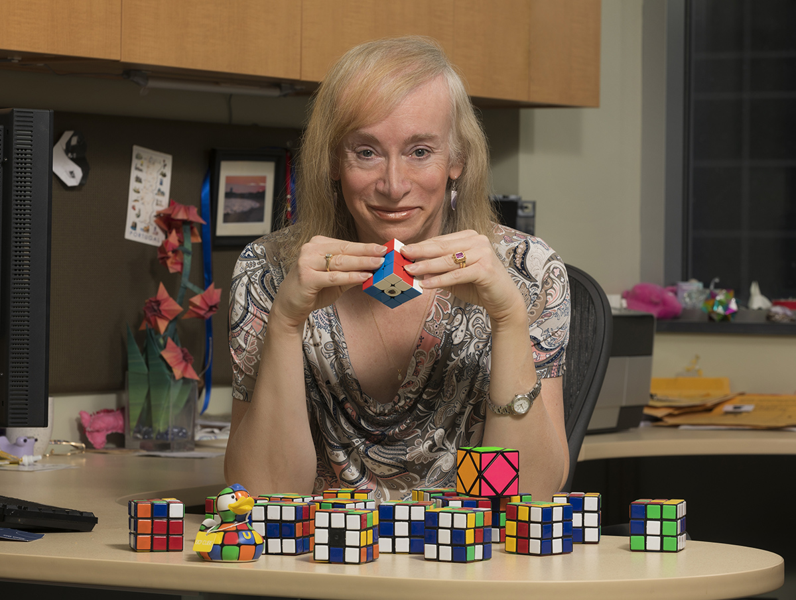

FRIDRICH
METHOD
Or CFOP is Method to solve Rubik's cube with quickly

Rubik adalah sebuah teka-teki berantai (puzzle maksudnya) mekanis yang berbentuk kubus dimana setiap sisinya dibagi menjadi 9 buah kotakan-kotakan kecil yg memiliki kelompok warna awalan yang sama untuk masing-masing sisinya (putih, merah, biru, oranye, hijau dan kuning) dan dapat diputar sedemikian rupa sehingga menghasilkan kotakan-kotakan yang acak di masing-masing sisinya. Cara memainkannya adalah dengan mengacak dan mengembalikan kotakan-kotakan tersebut ke sisi-sisi yang sebenarnya sesuai dengan kelompok warnanya.
penemu rubik

Rubik ditemukan pada tahun 1974 oleh Ernõ Rubik, seorang profesor arsitektur Hongaria. Rubik kemudian menggunakan Kubus sebagai latihan pembelajaran untuk mengajarkan murid-muridnya tentang ruang 3 dimensi . Dia tidak menyangka bahwa “Kubus Ajaib” (begitulah awalnya dia menamainya) akan menjadi salah satu teka-teki paling terkenal di dunia sepanjang masa!
Pada tahun 1980-an, Rubik menjadi tren di seluruh dunia dengan menjual jutaan Rubik setiap tahun dan mengukuhkan warisannya ke dalam budaya pop. Ditampilkan dalam The Simpsons, The Big Bang Theory, video musik Spice Girls, dan film-film besar Hollywood, popularitas Rubik's Cube terus berkembang di seluruh dunia.
Saat ini, Rubik dipuja sebagai salah satu mainan paling dicintai sepanjang masa. Setiap tahun jutaan Kubus dijual, dipecahkan, dan dibagikan kepada teman, keluarga, dan pencari teka-teki.
metode "cfop"
Jessica Fridrich merupakan seorang Professor di bidang Elektro dan Komputer di Universitas Birmingham. Beliau adalah penemu metode CFOP yang dikenal sebagai Metode Jessica Fridrich.
Metode CFOP (Cross – F2L – OLL – PLL), juga dikenal sebagai metode Fridrich , adalah salah satu metode yang paling umum digunakan dalam penyelesaian cepat Kubus Rubik 3×3×3 dan mungkin merupakan metode tercepat. Metode ini pertama kali dikembangkan pada awal tahun 1980an dengan menggabungkan inovasi sejumlah speed cuber. Speedcuber Ceko dan metode yang sama Jessica Fridrich umumnya berjasa mempopulerkannya dengan menerbitkannya secara online pada tahun 1997.